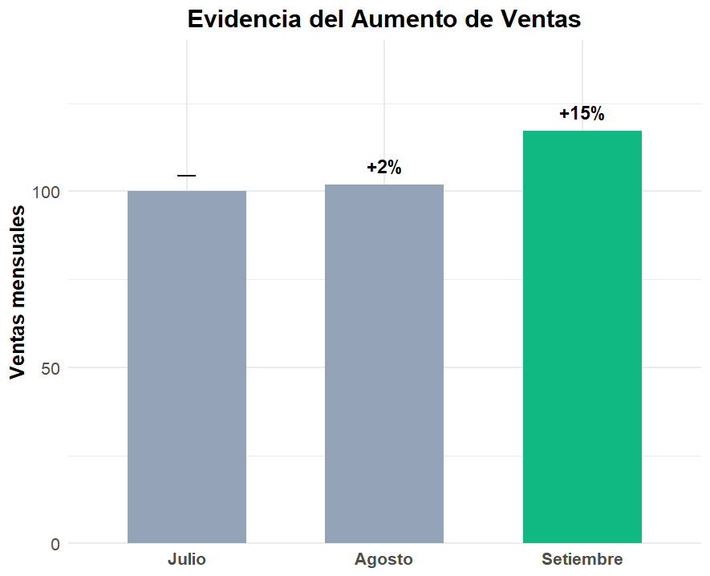

Creación de Recursos Educativos y Presentaciones de Alto Impacto
Estrategias pedagógicas, herramientas digitales e IA
Mgtr. Edir Gonzano
Universidad Nacional de Educación Enrique Guzmán y Valle
La Innovación es un Imperativo 🚀
En la educación actual, los recursos multimedia son esenciales. El éxito radica en un diseño arraigado en la ciencia de cómo aprendemos.
Sección I
Fundamentos Cognitivos y Pedagógicos
La Teoría Cognitiva del Aprendizaje Multimedia
Por Richard Mayer
Modelo del proceso de aprendizaje multimedia (Adaptado de Mayer, 2010 y Sorden, 2012).
Los 3 Pilares del Aprendizaje Multimedia
👁️ Doble Canal 👂
Procesamos por vías separadas lo que vemos y lo que oímos.
📦 Capacidad Limitada
Nuestra mente solo puede procesar un poco de información a la vez en cada canal.
🧱 Procesamiento Activo
Aprender no es recibir, es construir activamente el conocimiento.
El Objetivo: Gestionar la Carga Cognitiva
Extrínseca
El "ruido". Mal diseño que distrae.
REDUCIRIntrínseca
La dificultad del tema.
GESTIONARGenerativa
El esfuerzo para entender.
FOMENTAREjemplo: Reduciendo la Carga Extrínseca
❌ Con Distracciones (Carga Alta)
Música de fondo, animaciones irrelevantes y exceso de texto aumentan la carga extrínseca.
✅ Sin Distracciones (Carga Óptima)
Un diseño limpio y enfocado permite que el estudiante se concentre en lo esencial (Principio de Coherencia).
Trivia Interactiva (1/5)
Añadir música de fondo irrelevante a una lección, ¿qué tipo de carga aumenta?
Incorrecto
Incorrecto
Incorrecto
¡Correcto!
Principios Clave (1/2)
Principio de Coherencia
Elimina todo lo irrelevante. ¡Menos es más!
Principio de Señalización
Usa pistas visuales para guiar la atención a lo importante.
Principio de Redundancia
Prefiere gráficos + narración. Evita narrar y mostrar el mismo texto.
Principio de Contigüidad
Presenta texto e imágenes relacionadas cerca y al mismo tiempo.
Principios Clave (2/2)
Principio de Segmentación
Divide la lección en partes más pequeñas y manejables.
Principio de Pre-entrenamiento
Presenta los conceptos clave ANTES de la lección principal.
Principio Multimedia y Voz
Aprendemos mejor con imágenes + voz humana que solo con texto.
Principio de Personalización
Usa un tono conversacional y directo ("tú", "nosotros").
Ampliando el Panorama
REA 🌐
Los Recursos Educativos Abiertos democratizan el acceso al conocimiento y fomentan la colaboración.
TAM 💻
El Modelo de Aceptación Tecnológica nos recuerda que la utilidad y facilidad de uso son clave para la adopción.
Sección II
Presentaciones de Alto Impacto
La Solución: Enfoque Aserción-Evidencia
Aserción 🗣️
El titular es una oración completa y afirmativa que resume el mensaje clave.
Evidencia 📊
El cuerpo es evidencia visual (gráficos, imágenes) que soporta la aserción. Nunca viñetas.
Demostración: Aserción-Evidencia
❌ Formato Tradicional (Ineficaz)
- Incremento en ventas
- Campaña exitosa
- Nuevos clientes
Viñetas genéricas sin contexto dificultan la comprensión y retención.
✅ Enfoque A-E (Eficaz)
Las ventas aumentaron un 15% gracias a la nueva campaña de marketing.
Una afirmación clara respaldada por evidencia visual mejora la retención del contenido.
El Poder de la Narrativa 📈

Inicio
Presenta un problema o una pregunta intrigante para captar la atención desde el primer momento.

Nudo
Desarrolla tu idea principal con datos y ejemplos que construyan la tensión y el interés.

Desenlace
Concluye con una solución clara o una llamada a la acción que deje una impresión duradera.
Trivia Interactiva (2/5)
En el enfoque Aserción-Evidencia, ¿qué elemento NUNCA debería estar en el cuerpo de la diapositiva?
Incorrecto
Incorrecto
Incorrecto
¡Correcto!
Principio Visual 1: Simplicidad
El espacio en blanco es tu amigo. Una idea por diapositiva.
Principio Visual 2: Tipografía
Grande, clara y legible. Mínimo 30-40 puntos.
Principio Visual 3: Contraste
Alto contraste entre texto y fondo es innegociable.
Principio Visual 4: Imágenes con Propósito
Usa visuales de alta calidad para clarificar, no para decorar.
La Accesibilidad es Clave 🛠️
- Usa texto alternativo en todas las imágenes.
- Asegura un alto contraste de color.
- Proporciona transcripciones o subtítulos para videos.
Sección III, IV y V
Ecosistema de Herramientas
Herramientas de autoría educativa
Articulate 360
Estándar para cursos eLearning complejos, simulaciones y escenarios ramificados.
Genially
Líder en contenido interactivo. Enriquece recursos con animación y gamificación.
H5P
Framework gratuito para crear +40 tipos de contenido interactivo, ideal para LMS.
Herramientas de Presentación con IA
Beautiful.ai
La IA aplica reglas de buen diseño para mantener la coherencia y estética automáticamente.
Tome
Enfocado en storytelling digital para crear narrativas inmersivas y fluidas con IA.
Gamma
Versátil para crear presentaciones, webs y documentos, incrustando contenido interactivo.
Canva
Su función "Magic Design" convierte texto en una presentación visual con un solo clic.
Asistentes de IA para Creación
Gemini / Notebook
Ideal para razonar, generar texto, código e ideas creativas y estructurar contenido.
ChatGPT
Perfecto para generar borradores, resumir textos y explorar ideas rápidamente.
Perplexity
Motor de búsqueda conversacional que da respuestas directas con citas, excelente para investigación.
Desafíos Críticos de la IA ⚠️
- Precisión y "alucinaciones"
- Sesgos inherentes en los datos
- Privacidad de datos del estudiante
- Deshumanización del proceso educativo
El Arte del Prompt Engineering 🧑🎨
Actúa como un diseñador instruccional experto. Crea una diapositiva sobre el Principio de Coherencia de Mayer, usando el enfoque Aserción-Evidencia. La aserción debe ser clara. La evidencia debe ser una metáfora visual simple. El tono debe ser directo y amigable.
La calidad del resultado de la IA es directamente proporcional a la calidad de la instrucción. Sé claro, específico y proporciona contexto.
Trivia Interactiva (3/5)
Una "alucinación" de la IA se refiere a:
Incorrecto
¡Correcto!
Incorrecto
Incorrecto
Trivia Interactiva (4/5)
¿Cuál es el error más común al aplicar el método Aserción-Evidencia?
Incorrecto
¡Correcto!
Incorrecto
Incorrecto
Trivia Interactiva (5/5)
Para maximizar el aprendizaje, ¿qué tipo de carga cognitiva debemos FOMENTAR?
Incorrecto
Incorrecto
¡Correcto!
Incorrecto
Conclusión: Un Paradigma Híbrido
El futuro no es la sustitución, sino la colaboración sinérgica. La IA nos libera para enfocarnos en lo insustituible: la conexión humana.
🧠 Humano
Aporta el juicio pedagógico, la creatividad y la empatía.
🤖 IA
Actúa como un potente asistente de producción y personalización.
Tu Próximo Paso 🎯
Elige un principio de diseño que aprendiste hoy y aplícalo para mejorar una de tus diapositivas existentes. ¡Empieza pequeño, itera y verás la diferencia!
Referencias
- Alley, M. (2018). The craft of scientific presentations (2ª ed.). Springer.
- Baddeley, A. D. (1986). Working memory. Oxford University Press.
- Clark, R. E., & Feldon, D. F. (2005). Five common but questionable principles of multimedia learning. En R. E. Mayer (Ed.), The Cambridge handbook of multimedia learning (pp. 97–115). Cambridge University Press.
- Davis, F. D. (1989). Perceived usefulness, perceived ease of use, and user acceptance of information technology. MIS Quarterly, 13(3), 319–340.
- Kirschner, P. A., Sweller, J., & Clark, R. E. (2006). Why minimal guidance during instruction does not work: An analysis of the failure of constructivist, discovery, problem-based, experiential, and inquiry-based teaching. Educational Psychologist, 41(2), 75–86.
- Mayer, R. E. (2009). Multimedia learning (2ª ed.). Cambridge University Press.
- Moreno, R., & Mayer, R. E. (2007). Interactive multimodal learning environments. Educational Psychology Review, 19(3), 309–326.
- Paivio, A. (1986). Mental representations: A dual coding approach. Oxford University Press.
- Sweller, J. (1994). Cognitive load theory, learning difficulty, and instructional design. Learning and Instruction, 4(4), 295–312.
- Tufte, E. R. (2003). The cognitive style of PowerPoint. Graphics Press.
- UNESCO. (2019). Recommendation on Open Educational Resources (OER). UNESCO.
🚀 ¡Actividad! Aplica lo Aprendido
Elige UNA de las siguientes actividades y comparte tu creación.
Actividad 1: Rediseño Radical 🎨
Toma una diapositiva tradicional y sobrecargada (tuya o de ejemplo) y rediséñala aplicando al menos TRES principios vistos hoy.
- Aserción-Evidencia
- Principio de Coherencia
- Principio de Señalización
- Mejora de Contraste y Tipografía
¡Muestra el antes y el después!
Actividad 2: Creación con IA 🤖
Usa un asistente de IA (Gemini, ChatGPT) con un prompt bien diseñado para generar el contenido de una nueva diapositiva sobre un tema educativo de tu elección.
- Especifica el rol ("Actúa como...").
- Define el público y el formato (Aserción-Evidencia).
- Pide una metáfora visual para la evidencia.
- No olvides detallar el tono deseado.
¡Comparte tu prompt y el resultado!
¡Envía tu trabajo y sigamos en contacto!
 edir.gonzanorojas@gmail.com
edir.gonzanorojas@gmail.com

¡Gracias!
Preguntas y Discusión